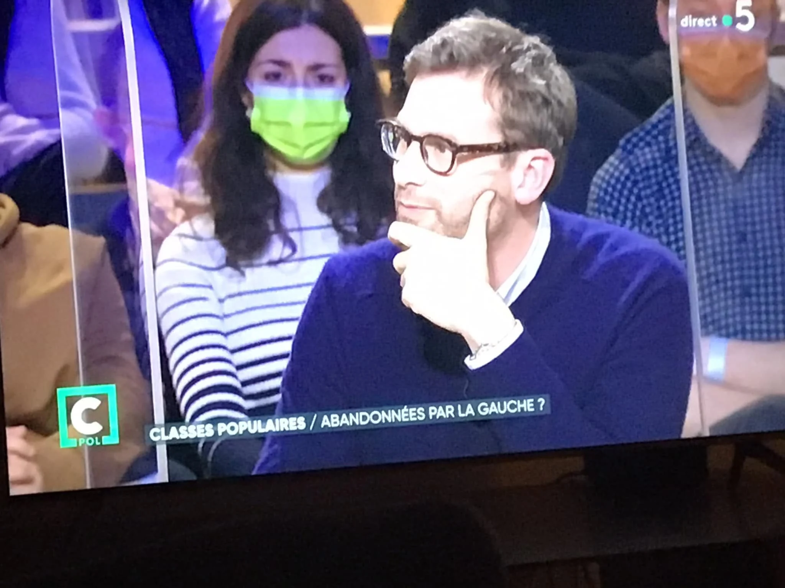

Publication relayée par le PCF 79
Nicolas Mathieu évoque le rôle du Parti communiste sur France 5
Date de mise à jour indiquée par Facebook · 14 février 2022
Texte de la publication · Christian Digne
Vertueux
Le romancier, prix Goncourt, Nicolas Mathieu, sur C Pol:
« Un Parti communiste à 30, 20 ou 5%, c’est pas pareil pour le pays. Il construisait des solidarités qui modifiaient le rapport de force dans le pays»
« C’est bien qu’il y ait une gauche bac pro qui défend les gens des entreprises, des entrepôts, des routiers… »
« Fabien Roussel inverse le rapport de force ».
« J’aimerai que des forces comme celle là arrachent le vote populaire à l’extrême droite. Son effort de mobilisation de ces gens là à gauche me semble vertueux »
(Je recommande son dernier livre Connemara, un roman clairvoyant et profond sur la France d’aujourd’hui. Servi par une écriture magnifique)

Sources
Christian Digne · publication relayée par le PCF 79 · bibliothèque Facebook · AR-0002-FB-01963
À lire aussi · Pass culture, non à la punition collective ! · Le lien d’origine